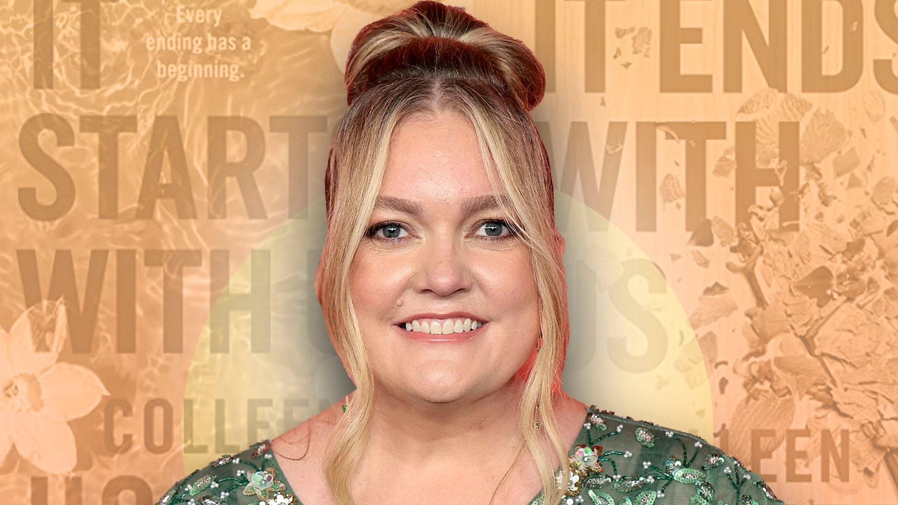
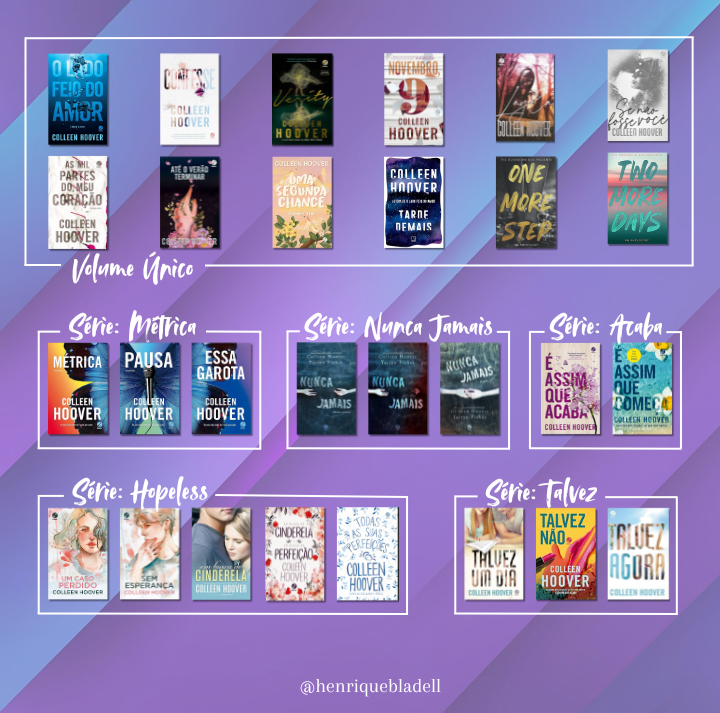

Colleen Hoover
03 de Maio de 2025 15:42 Margaret Colleen Fennell mais conhecida como Colleen Hoover, nasceu em Sulphur Springs em 11 de dezembro de 1979. Ela é uma escritora norte-americana que escreve romances que abordam temas como traumas, violências e relacionamentos tóxicos.
Muitos de seus trabalhos foram auto publicados antes de serem adquiridos por uma editora. De acordo com o Grupo Editorial Record, responsável pela publicação dos livros de Hoover no Brasil, ela alcançou um total de 1.489.784 exemplares vendidos em 2023. No Brasil, a autora tem 26 livros publicados. Mas possui cerca de 30 livros, incluindo romances, novelas e contos.
| Colleen Hoover | |
|---|---|
| Nome Completo | Margaret Colleen Fennell |
| Nascimento | 11 de dezembro de 1979 (45 anos) Sulphur Springs, Texas, Estados Unidos |
| Filhos | 3 |
| Ocupação | Escritora |
| Principais trabalhos |
Todas as suas (Im)Perfeições (2018)
|
| Gênero Literário | Romance, Drama, Ficção e Thriller |
| Website | colleenhoover.com |
Biografia
Colleen Hoover nasceu em uma pequena cidade do Texas, localizada a cerca de 120 km de Dallas. Desde cedo, suas experiências de vida moldaram sua sensibilidade narrativa — suas memórias mais antigas remetem a episódios de violência doméstica, vividos ao lado da mãe, a quem dedica palavras de carinho em seu romance É Assim Que Acaba (It Ends With Us). Até hoje, ambas vivem na mesma propriedade onde Colleen cresceu.
Formada em estudos sociais por uma faculdade comunitária nos Estados Unidos, ela trabalhou por anos em centros de apoio a crianças, pessoas com distúrbios mentais e dificuldades de nutrição. A escrita, inicialmente, era apenas um hobby. Em 2011, ela começou a compartilhar pequenos trechos de histórias com amigos e familiares. Foi sua chefe na época, Stephanie Cohen — que mais tarde se tornaria sua parceira na carreira literária — quem a incentivou a publicar seu primeiro livro. Em janeiro de 2012, Colleen autopublicou Métrica (Slammed).
O sucesso foi quase instantâneo: em poucos dias, desconhecidos começaram a comprar o livro. Sua mãe contou ao The New York Times que, em um dia, seis pessoas desconhecidas haviam adquirido o romance — no seguinte, já eram 60. A ascensão foi meteórica. Após assinar contrato com uma agente literária, vendeu dois livros para a Atria Books e, logo depois, voltou à autopublicação com Um Caso Perdido (Hopeless), que alcançou o primeiro lugar na lista de mais vendidos do New York Times. Foi o primeiro livro autopublicado a conquistar tal feito — e tudo isso aconteceu em apenas sete meses. A trajetória de Colleen Hoover nunca seguiu as regras tradicionais do mercado editorial. Ela manteve contratos com três grandes editoras americanas ao mesmo tempo e continuou publicando por conta própria quando desejava. Essa independência revela um controle criativo raro para autores de seu porte, o que só reforça sua autenticidade e ligação com os leitores.
Obras
Com base no Instagram Oficial da Colleen, eu fiz uma lista de todos os livros traduzidos dela e a ordem correta de leitura. Eu particularmente ainda não li todos, mas pretendo. Algumas novels não possuem tradução, mas acredito que deve ter alguma versão feita por fãs na web.
Série Métrica (Slammed):
• 2 - Pausa (Point of Retreat)
• 3 - Essa Garota (This Girl)
Série Hopeless:
• 1 - Um Caso Perdido (Hopeless)
• 2 - Sem Esperança (Losing Hope)
• 3 - Em Busca de Cinderela (Finding Cinderella)
• 4 - Em Busca da Perfeição (Finding Perfect)
• 5 - Todas as Suas (Im)Perfeições (All Your Perfects)
Série Talvez (Maybe Someday):
• 1 - Talvez Um Dia (Maybe Someday)
• 2 - Talvez Não (Maybe Not)
• 3 - Talvez Agora (Maybe Now)
Série Nunca Jamais (Never Never):
• 1 - Nunca Jamais – Parte 1 (Never Never #1)
• 2 - Nunca Jamais – Parte 2 (Never Never #2)
• 3 - Nunca Jamais – Parte 3 (Never Never #3)
Série Acaba (It Ends with Us):
• 1 - É Assim que Acaba (It Ends with Us)
• 2 - É Assim que Começa (It Starts with Us)
Volume Único:
O Lado Feio do Amor (Ugly Love)
Novembro, 9 (November 9)
Confesse (Confess)
As Mil Partes do Meu Coração (Without Merit)
Se Não Fosse Você (Regretting You)
Até o Verão Terminar (Heart Bones)